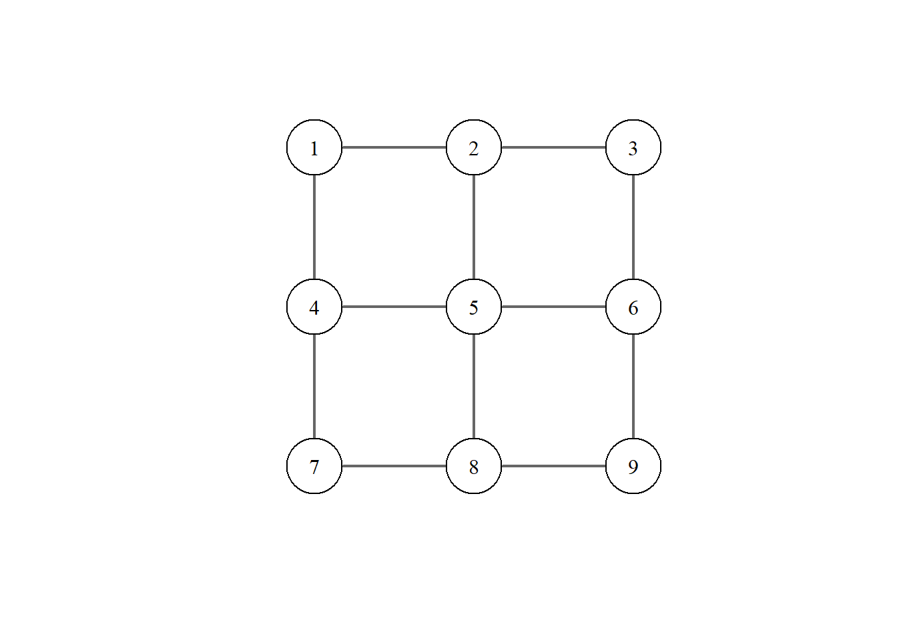
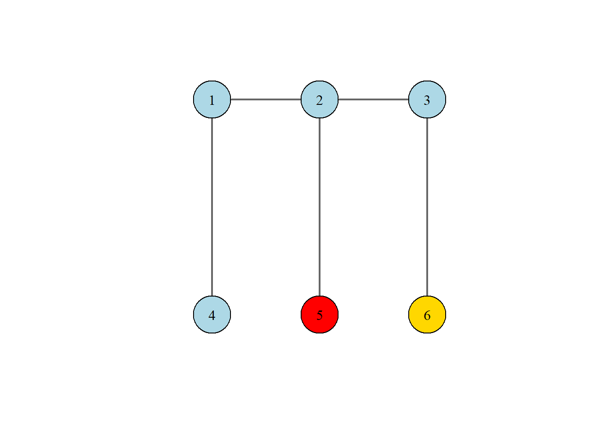

8 Introdução às cadeias de Markov
8.1 Processos estocásticos, propriedade de Markov e objetivos do capítulo
Considere um conjunto \(\mathcal{T}\subseteq \mathbb{R}\), doravante denominado conjunto de índices. Para cada \(t\in\mathcal{T}\), seja \(X(t)\) uma variável aleatória. Então, o conjunto \(\{X(t),t\in\mathcal{T}\}\) é denominado processo estocástico.
Example 8.1 Amostra aleatória. Seja \(X_1,\ldots,X_n\) uma amostra aleatória, ou seja, uma coleção de variáveis aleatórias independentes e identicamente distribuídas. Fazendo \(\mathcal{T}=\{1,\ldots,n\}\) e \(_t=X(t)\), temos que a amostra aleatória é um processo estocástico.
Example 8.2 Um dos objetivos principais dos processos estocásticos é relacionar um comportamento aleatório com um índice de interesse. Por exemplo, suponha que \(X(t)\), com \(t>0\), é o número de vendas realizadas até o tempo \(t\). Obviamente, são esperadas mais vendas com o aumento de \(t\) e um modo simples de expressar isso é supor que
\[E(X(t))=\mu t,\] onde \(\mu\) representa a média de vendas por unidade de tempo. Diferente das amostras aleatórias, para \(t\neq s\), \(X(t)\) não tem a mesma distribuição que \(X(s)\). Além disso, se \(s<t\) \[E(X(s))=\mu s\leq\mu t =E(X(t))\] e, como o conhecimento de \(X(s)\) altera nosso conhecimento sobre \(X(t)\), temos que as variáveis \(X(s)\) e \(X(t)\) são dependentes.
Seja \(\{X(t),t\in\mathcal{T}\}\) um processo estocástico. Considere que observamos o processo até o índice \(s\). Considere a probabilidade do processo no índice \(t+s\) estar no conjunto \(A\):
\[P( X(t+s)\in A|X(u)=x(u),0\leq u\leq s).\] O problema acima é complexo, uma vez que devemos entender a distribuição de \(X(t+s)\) para cada reazaliação do processo até o índice \(s\). Suponha então que apenas o último índice observado é relevante para o processo, ou seja
\[P( X(t+s)\in A|X(u)=x(u),0\leq u\leq s)=P( X(t+s)\in A|X(s)=x(s)).\] Nesse caso, o processo mantém na memória apenas o índice mais recente. Isso é denominado propriedade de Markov.
Processos estocásticos com a propriedade de Markov são denominados cadeias de Markov. Existem inúmeras particularidades sobre esses processos que poderiam cobrir um curso regular de 60h. Portanto, nesse curso, nossos objetivos são
apresentar as cadeias de Markov considerando apenas variáveis aleatórias discretas com conjunto de índice discreto
definir probabilidade e matriz de transição
apresentar as classificações de estados
apresentar as ditribuições estacionárias
8.2 Definição e exemplos de cadeias de Markov à tempo discreto
Doravante, vamos considerar que \(\mathcal{T}=\{0,1,\ldots\}\). Deste modo, a notação \(X(t)\) será substituída por \(X_t\). Além disso, \(t\) será interpretado como tempo de ocorrência. Por exemplo, \(\{X_{10}=3\}\) é evento da ocorrência de 3 no tempo \(10\).
Para um tempo \(t>0\) qualquer, o incremento de tempo \(s\) será denominado passo, como o passo do ponteiro de um relógio. Por exemplo \(t+1\) é um passo após o tempo \(t\).
Vamos também considerar que todas as variáveis aleatórias do processo são discretas. O conjunto de todos os valores possíveis para as variáveis do processo é denominado conjunto dos estados e cada valor em particular é denominado estado.
Vamos definir formalmente o nosso processo de interesse
Definition 8.1 Dizemos que o processo estocástico \(\{X_t, t=0,1,\ldots\}\) é uma cadeia de Markov se, para quaisquer estados \(i\) e \(j\), \[P(X_{n+1}=j|X_n=i,X_{n-1}=x_{n-1}\ldots,X_0=x_0)=P(X_{n+1}=j|X_n=i)\]
Note que, para uma cadeia de Markov, é possível que, para \(m\neq n\)|
\[P(X_{n+1}=j|X_n=i)\neq P(X_{m+1}=j|X_m=i).\] Estamos interessados apenas em cadeinas nas quais isso não ocorre.
Definition 8.2 Dizemos uma cadeia de Markov \(\{X_t, t=0,1,\ldots\}\) é *homogênea se, para quaisquer estados \(i\) e \(j\) e para quaisquer tempos \(n,m\), \[P(X_{n+1}=j|X_n=i)=P(X_{m+1}=j|X_m=i).\]
Doravante, todas as cadeias apresentadas serão consideradas homogêneas. Então, para \(n\) arbitrário, a probabilidade \[p_{ij}=P(X_{n+1}=j|X_n=i)\] será denominada probabilidade de transição (em um passo).
Example 8.3 O passeio do sapo. Um sapo vive em uma lagoa, movimentando-se por nove vitória régias, conforme a ilustração abaixo.
Estando na vitória régia \(i\), seu próximo movimento será dado ao acaso para uma vitória régia vizinha ((Norte, Sul, Leste ou Oeste).
Seja \(X_n\) a vitória régia (estado) no qual o sapo se encontra no tempo \(n\). Calcule:
As probabilidades de transição partindo do estado 1.
A probabilidades de transição partindo do estado 5.
Solução.
- Estando no estado 1, o sapo pode apenas se deslocar para os estados 2 ou 4. Portanto
\[p_{1j}=\begin{cases}\frac{1}{2},&j=2,4\\0,&\hbox{caso contrário}\end{cases}\]
- Estando no estado 5, o sapo pode se deslocar para os estados 2, 4, 6 ou 8. Portanto
\[p_{5j}=\begin{cases}\frac{1}{4},&j=2,4,6,8\\0,&\hbox{caso contrário}\end{cases}\]
Exercise 8.1 Um rato é colocado no Estado 1 de um labirinto composto por 6 salas. Ele se move entre as salas adjacentes escolhendo uma ao acaso, conforme a ilustração abaixo. Se o rato chegar à sala 6, ele encontra o queijo e para de se mover. Se o rato entrar na sala 5, ele fica preso na ratoeira. Seja \(X_n\) a sala (estado) no qual o rato se encontra no tempo \(n\). Determine todas as probabilidades de transição.

Definition 8.3 Grafo de uma cadeia
Um grafo orientado é formado por um conjunto de vértices e um conjunto de arcos. O grafo de uma cadeia de Markov é construído da seguinte forma:
O conjunto de vértices é composto pelos estados do processo
Existe um arco saindo do estado \(i\) e chegando ao estado \(j\) se \(p_{ij}>0\).
O arco \((i,j)\) recebe o rótulo \(p_{ij}\)
Example 8.4 Considere uma cadeia de Markov onde \(X_n=1\) se chove no dia \(n\) e \(X_{n}=0\) em caso contrário. Suponha que:
Dado que hoje choveu, a probabilidade de chover amanhã é \(\alpha\)
Dado que não choveu hoje, a probabilidade de não chover amanhã é \(\beta\)
Construa o grafo desta cadeia e sua matriz de transição.
Solução
Temos que
\[p_{1j}=\begin{cases}\alpha,&j=1 \\1-\alpha,&j=0\end{cases}\] e que
\[p_{0j}=\begin{cases}1-\beta,&j=1 \\\beta,&j=0\end{cases}\] logo, podemos gerar o grafo abaixo.
Exercise 8.2 Todos os dias, João se desloca entre dois pontos: sua casa e seu trabalho. João tem apenas um guarda-chuva. Se no momento de seu deslocamento estiver chovendo, João utilizará seu guarda-chuva se o mesmo estiver no local. Caso contrário, João fará seu deslocamento na chuva. Além disso, João só leva consigo o guarda-chuva se estiver chovendo. Considere os seguintes estados:
0 - João está em casa com o guarda-chuva
1- João está no trabalho com o guarda-chuva
2 - João está em casa sem o guarda-chuva
3 - João está no trabalho sem o guarda-chuva
Sabendo que a probabilidade de estar chovendo quando João tem que sair de um local é de 0,25, construa o grafo dessa cadeia de Markov.
8.3 Classificação de estados
Um passeio é uma sequência de estados \(i_0,i_1, i_2, \dots, i_n\) tal que, para cada par sucessivo, a probabilidade de transição é positiva (existe uma aresta conectando-os). Partindo de \(i_0\), a probabilidade do processo passar pelo caminho \(i_1,\ldots,i_n\) é
\[P(X_n=i_n,\ldots,X_1=i_1|X_0=i_0)=p_{i_{n-1}i_n}\cdots p_{0i_1}\] Definimos por \(p_{ij}^{(n)}\) como a probabilidade do processo sair do estado \(i\) e chegar no estado \(j\) em \(n\) passos. Essa probabilidade é equivalente a soma das probabilidades de todos os passeios que saem de \(i\) e chegam em \(j\) em \(n\) passos.
. ::: {#exr-} Considere uma cadeia com três estados e as seguintes probabilidades de transição:
\[\begin{align}p_{01}&=1\\ p_{10}&=0,1\\ p_{11}&=0,2\\ p_{12}&=0,7\\ p_{22}&=0,6 \\ p_{20}&=0,4\end{align}\]
Construa o grafo da cadeia
Calcule a probabilidade do passeio 0-1-2-0
Calcule \(p_{00}^{(4)}\). :::
Exercise 8.3 Considere uma cadeia com quatro estados e as seguintes probabilidades de transição:
\[\begin{align}p_{01}&=1\\ p_{11}&=0,3\\ p_{12}&=0,7\\ p_{22}&=0,6 \\ p_{20}&=0,2\\ p_{23}&=0,2\\p_{33}&=1\end{align}\]
Construa o grafo da cadeia
Calcule a probabilidade do passeio 0-1-2-0
Começando no estado 0, é possível que o processo não consiga retornar para 0?
Existe algum estado tal que, partindo dele, o processo vai retornar para ele certamente?
Exercise 8.4 Considere uma cadeia com quatro estados e as seguintes probabilidades de transição:
\[\begin{align}p_{00}&=0,8\\p_{01}&=0,2\\ p_{10}&=0,3\\ p_{11}&=0,4\\ p_{12}&=0,3 \\ p_{22}&=0,2\\ p_{23}&=0,8\\p_{32}&=05\\p_{33}&=0,5\end{align}\]
Construa o grafo da cadeia
Começando no estado 0, é possível que esse estado nunca mais seja visitado pelo processo? Em qual sitação isso ocorre?
Começando no estado 3, é possível que esse estado nunca mais seja visitado pelo processo? Porquê?
Os exercícios acima mostraram que alguns estados podem deixar de ser visitados pelo processo. Seja \(f_i^{(n)}\) a probabilidade de, saindo de \(i\), o processo voltar pela primeira vez para \(i\) em \(n\) passos, ou seja
\[f_i^{(n)}=P(X_n=i,X_{n-1}\neq i,\ldots,X_1\neq i|X_0=i).\] Então, a probabilidade de que o processo saia de \(i\) e volte para \(i\) em algum momento é
\[\begin{align} f_i &=P(\cup_{n=1}^\infty \hbox{ {voltar em exatos $n$ passos}}) \\ &=\sum_{n=1}^\infty P(\hbox{ {voltar em exatos $n$ passos}})\\&=\sum_{n=1}^\infty f_i^{(n)} \end{align}\]
Definition 8.4 Dizemos que o estado \(i\) é recorrente se \(f_i=1\) e dizemos que ele é transiente se \(f_i<1\).
Exercise 8.5 Considerando o grafo da cadeia abaixo, classifique os estados como transientes e recorrentes.
Definition 8.5 Acessibilidade
Dizemos que o estado \(j\) é acessível a partir de \(i\), se existe pelo menos um passeio saindo de \(i\) e chegando em \(j\) Notação: \(i\to j\).
Comunicação
Dizemos que os estados \(i\) e \(j\) se comunicam se \(i\to j\) e \(j\to i\). Notação: \(i\leftrightarrow j\).
Classe
Dizemos que \(i\) e \(j\) pertencem a mesma classe se \(i\leftrightarrow j\).
Proposition 8.1 Se \(i\) e \(j\) estão na mesma classe e \(i\) é recorrente(transiente), então \(j\) também será recorrente(transiente).
Vamos demonstrar a proposição de forma intuitiva.
Se \(i\) é recorrente, então certamente o processo sai do estado \(i\) e volta para ele. Portanto, partindo de \(j\) o processo vai acessar o estado \(i\) em algum momento, certamente voltar para \(i\) e então voltar para \(j\) em algum momento. Portanto, partindo de \(j\), o processo certamente retorna para \(j\), o que implica que \(j\) é recorrente.
Se \(i\) é transiente, então é possível que o processo saia do estado \(i\) e nunca mais volte para ele. Mas como \(i\) se comunica com \(j\), é possível que o processo saia de \(j\), chegue em \(i\) e, a partir dali, nunca mais retorne para \(j\). Portanto, \(j\) é transiente.
Exercise 8.6 Considere uma cadeia de Markov com as seguintes probabilidades de transição
\[\begin{array}{c|ccccccccccc}\hline i\setminus j & 0 & 1 & 2 & 3 & 4 & 5 & 6 & 7 & 8 & 9 & 10\\ \hline 0 & 0,2 & 0,8 & 0 & 0 & 0 & 0 & 0 & 0 & 0 & 0 & 0 \\ 1 & 0,3 & 0 & 0,5 & 0,2 & 0 & 0 & 0 & 0 & 0 & 0 & 0 \\ 2 & 0 & 0 & 1 & 0 & 0 & 0 & 0 & 0 & 0 & 0 & 0 \\ 3 & 0 & 0 & 0 & 0 & 0,5 & 0,5 & 0 & 0 & 0 & 0 & 0 \\ 4 & 0 & 0 & 0 & 1 & 0 & 0 & 0 & 0 & 0 & 0 & 0 \\ 5 & 0 & 0 & 0 & 0 & 0,2 & 0 & 0,8 & 0 & 0 & 0 & 0 \\ 6 & 0 & 0 & 0 & 0 & 0 & 0 & 0,1 & 0,9 & 0 & 0 & 0 \\ 7 & 0 & 0 & 0 & 0 & 0 & 0 & 0,7 & 0,3 & 0 & 0 & 0 \\ 8 & 0 & 0 & 0 & 0 & 0 & 0 & 0 & 0 & 1 & 0 & 0 \\ 9 & 0 & 0 & 0 & 0 & 0 & 0 & 0 & 0 & 0 & 0,2 & 0,8 \\ 10& 0 & 0 & 0 & 0 & 0 & 0 & 0 & 0 & 0 & 0,7 & 0,3 \\ \hline \end{array}\]
Construa o grafo da cadeia
Encontre as classes
Classifique cada classe como recorrente ou transiente.
Considere a cadeia de Markov abaixo:
Grafo da cadeia de Markov
Observe que para um estado \(i\) qualquer desta cadeia, \(p_{ii}^{(n)}>0\) somente para \(n\) múltiplo de 4. Estados com essa característica são denominados periódicos.
Definition 8.6 O estado \(i\) de uma cadeia de Markov é dito ser periódico se todos os retornos ao estado ocorrem em um número de passos múltiplo de \(k\) (neste caso, é dito que o período de \(i\) é igual a \(k\)). Notação: \(d_i=k\).
Formalmente, seja \(D_i=\{n\geq 1: p_{ii}^{(n)}>0\}\), ou seja, o conjunto com os números de passos necessários para o retorno ao estado e seja \(k\) o máximo divisor comum (mdc) de \(D_i\). Então \(k\) é denominado período do estado \(i\).
Se \(D_i=\varnothing\), então \(d_i=0\) e se \(d_i=1\), o estado \(i\) é denominado aperiódico.
Voltando ao grafo dado, pode-se notar, por exemplo, que \(D_0=\{4,8,\ldots\}\), logo, o período do estado é 4.
É importante separar a noção de período com o número mínimo de passos necessários para retornar ao estado. Se um estado possui período \(d\), então o processo só retornará ao estado em passos que são múltiplos de, mas não em todos os passos múltiplos de \(d\). O exemplo abaixo ilustra esse fato.
Example 8.5 Considere o grafo da cadeia abaixo:
Grafo da cadeia de Markov
Observe que, partindo do estado 0, a cadeia só pode retornar a 0 pelos seguintes passeios:
\[0\to 1\to 2\to 3 \to 4 \to 5 \to 6\to 7 \to 0\] e \[0\to 1\to 2\to 3 \to 4 \to 5 \to 0.\] O primeiro caminho é feito em 8 passos, logo \(p_{00}^{(n)}>0\) para múltiplos de 8. O segundo caminho é feito em 6 passos, logo \(p_{00}^{(n)}>0\) para múltiplos de 6. Como o máximo divisor comum entre 6 e 8 é 2, o período do estado 0 é 2.
Contudo \(p_{00}^{(2)}=0\). O período igual a 2 implica que se \(p_{00}^{(n)}>0\), então \(n\) é par.
Exercise 8.7 Considerando as probabilidades de transição abaixo, faça o grafo das cadeias e encontre o período do estado 0.
- \[\begin{array}{c|ccc} \hline i\setminus j & 0 & 1 & 2 \\ \hline 0 & 0 & 1 & 0 \\ 1 & 0 & 0 & 1 \\ 2 & 1 & 0 & 0 \\ \hline\end{array}\]
b .
\[\begin{array}{c|ccc} \hline i\setminus j & 0 & 1 & 2 \\ \hline 0 & 0 & 1 & 0 \\ 1 & 0 & 0,8 & 0,2 \\ 2 & 1 & 0 & 0 \\ \hline\end{array}\]
\[\begin{array}{c|cccc} \hline i\setminus j & 0 & 1 & 2 & 3\\ \hline 0 & 0 & 1 & 0 & 0 \\ 1 & 0 & 0 & 0,2 & 0,8 \\ 2 & 1 & 0 & 0 & 0\\ 3 & 0 & 1 & 0 & 0 \\ \hline\end{array}\]
\[\begin{array}{c|cccc} \hline i\setminus j & 0 & 1 & 2 & 3\\ \hline 0 & 0 & 1 & 0 & 0 \\ 1 & 0 & 0 & 0,2 & 0,8 \\ 2 & 1 & 0 & 0 & 0\\ 3 & 0 & 0 & 0 & 1 \\ \hline\end{array}\]
\[\begin{array}{c|ccccc} \hline i\setminus j & 0 & 1 & 2 & 3 &4\\ \hline 0 & 0 & 1 & 0 & 0 &0 \\ 1 & 0 & 0 & 1 & 0 &0 \\ 2 & 0,5& 0 & 0 & 0,5&0\\ 3 & 0 & 0 & 0 & 0 & 1 \\ 4 & 1 & 0 & 0 & 0 & 0 \\\hline\end{array}\]
Proposition 8.2 Todos os estados de uma mesma classe possuem o mesmo período.
Demonstração intuitiva. Considere \(i\) um estado dentro de uma classe \(C\) e que \(d_i=k\). Para cada \(j\in C\) só é possível sair de \(i\) e chegar em \(j\) em \(n_{ij}\) passos e volta para \(i\) em \(n_{ji}\) passos se \(n_{ij}+n_{ji}=n_j\) é um múltiplo de \(k\). Agora, seja \(m\) um valor tal que \(p_{jj}^{(m)}>0\). Considere então um passeio maior, saindo de \(i\) echegando em \(j\) em \(n_{ij}\) passos, retornando para \(j\) depois de \(m\) passos e e finalmente chegando de \(i\) em \(n_{ji}\) passos. Então, esse passeio, com \(n_j+m\) passos, também deve ser múltiplo de \(k\), o que implica que \(m\) também é múltiplo de \(k\) e, portanto \(d_j=k\).
Exercise 8.8 Considere a cadeia de Markov com as seguintes probabilidades de transição
\[\begin{array}{c|cccccc}\hline i\setminus j & 0 & 1 & 2 & 3 & 4 & 5 \\ \hline 0 & 0 & 1 & 0 & 0 & 0 & 0 \\ 1 & 0,5 & 0 & 0,5 & 0 & 0 & 0 \\ 2 & 0 & 0 & 0 & 1 & 0 & 0 \\ 3 & 0 & 0 & 0 & 0 & 1 & 0 \\ 4 & 0 & 0 & 0 & 1 & 0 & 0 \\ 5 & 0 & 0 & 0 & 0 & 0 & 1\\ \hline \end{array}\]
Identifique as classes e classifique-as como recorrenteou transiente
Determine o período de cada classe.
8.4 Distribuição estacionária
Até o presente momento, as cadeias de Markov foram caracterizadas pela probabilidade de transição. De fato, a probabilidade do processo estar no estado \(j\) no tempo \(n\) é dada por
\[P(X_n=j)=\sum_{i=-\infty}^\infty p_{ij}^{(n)}P(X_0=i),\] de modo que, em princípio, essa probabilidade é calculável apenas quando a função de probabilidade de \(X_0\) é conhecida.
Considere o caso particular, no qual \(P(X_n=j)=\pi_j\) não depende de \(n\). Isso implica que
\[\pi_j=\sum_{i=-\infty}^\infty p_{ij}^{(n)}\pi_i.\] Nessa caso, dizemos que \(\pi_i\) é a distribuição estacionária da cadeia de Markov. Observe que
\[\begin{align}\pi_j=\lim_{n\rightarrow\infty}\pi_j=\lim_{n\to\infty}\sum_{i=-\infty}^\infty p_{ij}^{(n)}\pi_i=\sum_{i=-\infty}^\infty\left[\lim_{n\to\infty}p_{ij}^{(n)}\right]\pi_i.\end{align}\] Acontece que é natural supor que, para \(n\) suficientemente grande, o estado inicial perca relevância em \(p_{ij}^{(n)}\), ou seja \(p_{ij}^{(n)}\approx a_j\), onde \(a_j\) não depende de \(i\). Mas, nesse caso
\[\begin{align}\pi_j=\sum_{i=-\infty}^\infty\left[\lim_{n\to\infty}p_{ij}^{(n)}\right]\pi_i=a_j\sum_{i=-\infty}^\infty \pi_i=a_j,\end{align}\] e, portanto, \[\pi_j=\lim_{n\rightarrow\infty}p_{ij}^{(n)}.\]
Portanto, a existência da distribuição estacionária está intimamente relacionada com o comportamento de \(p_{ij}^{(n)}\) quando \(n\to\infty\).
Proposition 8.3 Estados transientes não podem ter distribuição estacionária.
Demonstração intuitiva. Se \(j\) é transiente, então \(f_j<1\), o que implica que, em algum momento, esse estado nunca mais será visitado. Portanto \(p_{ij}^{(n)}\to 0\) quando \(n\to \infty\).
Proposition 8.4 Cadeias com mais de uma classe não tem distribuição estacionária.
Demonstração intuitiva. Suponha que a cadeia possui duas classes, \(C_1\) e \(C_2\). Como os estados entre as classes não se comunicam, temos as seguintes situações:
Uma classe é recorrente e a outra transiente: nesse caso, por causa dos estados transientes, não há distribuição estacionária.
As duas são recorrentes. Nesse caso, uma classe não pode ser acessível a partir da outra e a cadeia está sujeita ao estado inicial em \(X_0\), logo não há distribuição estacionária.
Proposition 8.5 Considere uma cadeia com apenas uma classe recorrente, com período maior que 1. Então, não há distribuição estacionária.
Demonstração intuitiva. Se o período de \(j\) é \(k>1\), então \(p_{ij}^{(n)}=0\) para todo \(n\) não múltiplo de \(k\). Logo para a sequência \(p_{ij}^{(1)},p_{ij}^{(2)},\ldots\) existe uma subsequência que converge para zero e, portanto, não pode existir \(\lim_{n\rightarrow\infty}p_{ij}^{(n)}\).
Proposition 8.6 Cadeias com uma única classe, recorrente e aperiódica, com um número finito de estados, tem distribuição estacionária.
Para uma cadeia com estados \(\{0,1,\ldots,m\}\), auando a distribuição estacionária existe, ela pode ser encontrada resolvendo
\[\pi_{j}=\sum_{i=0}^m p_{ij}\pi_i\] com a restrição \(\sum_{i=1}^m\pi_i=1\).
Importante. A distribuição estacionária é interpretada como distribuição em longo prazo, pois as frequências relativas dos estados da cadeia tendem para a distribuição estacionária.
Example 8.6 Considere a cadeia de Markov com as seguintes probabilidades de transição \(p_{ij}\):
\[\begin{array}{c|cc}\hline i\setminus j & 0 & 1 \\ \hline 0 & 0,2 & 0,8 \\ 1 & 0,7 & 0,3\\\hline\end{array}\]
É simples mostrar que a cadeia tem uma única classe recorrente e aperiódica. Temos então que a distribuição estacionária satisfaz
\[\begin{align}\pi_0&=p_{00}\pi_0+p_{10}\pi_1=0,2\pi_0+0,7\pi_1 \\ \pi_1&=p_{01}\pi_0+p_{11}\pi_1=0,8\pi_0+0,3\pi_1\\ 1&=\pi_0+\pi_1\end{align}\]
Pela restrição de soma 1, temos que \(\pi_0=1-\pi_1\) e substituindo essa informação na primeira equação teremos
\[(1-\pi_1)=0,2(1-\pi_1)+0,7\pi_1\Rightarrow \pi_1=\frac{8}{15}\] e, por consequência, \(\pi_0=7/15\).
Exercise 8.9 Uma empresa de streaming classifica seus clientes em três estados mensais:
Estado 0 (Inativo): O cliente não assinou o serviço.
Estado 1 (Básico): O cliente assinou o plano simples.
Estado 2 (Premium): O cliente assinou o plano completo com 4K.
A matriz de transição \(P\) entre os meses é:
\[\begin{array}{c|ccc}i\setminus j & 0 & 1 & 2 \\ \hline0 & 0,5 & 0,5 & 0 \\1 & 0,2 & 0,5 & 0,3 \\2 & 0 & 0,4 & 0,6\end{array}\]
Verifique se a cadeia possui uma única classe recorrente e é aperiódica.
Encontre a distribuição estacionária
Se o serviço tiver 1 milhão de clientes em potencial, quantos estarão no plano Premium no longo prazo?
Exercise 8.10 Uma fábrica monitora uma máquina essencial que pode estar em três estados:
Estado 0: Operando perfeitamente.
Estado 1: Operando com falhas menores (requer atenção).
Estado 2: Quebrada (parada total).
A matriz de transição semanal é:
\[\begin{array}{c|ccc}i\setminus j & 0 & 1 & 2 \\ \hline0 & 0,7 & 0,2 & 0,1 \\1 & 0 & 0,6 & 0,4 \\2 & 1 & 0 & 0\end{array}\]
Desenhe o grafo.
Verifique se a cadeia é irredutível e aperiódica.
Calcule a distribuição estacionária
Se o custo de manter a máquina parada (estado 2) é de R$ 10.000,00 por semana, qual é o gasto médio semanal esperado com quebras no longo prazo?